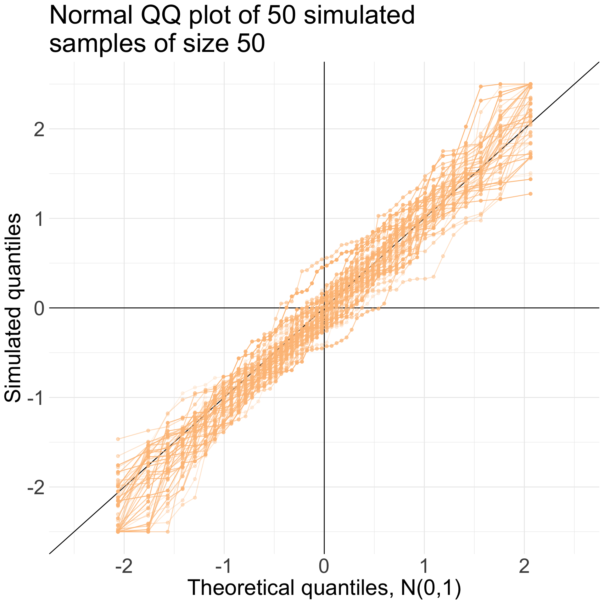
Week 3: Statistical Modelling and Approximations
STA238: Probability, Statistics, and Data Analysis II
ECDF and Symmetry


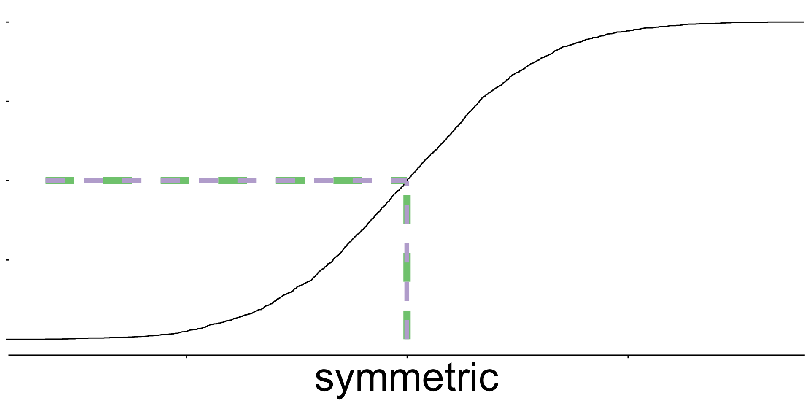
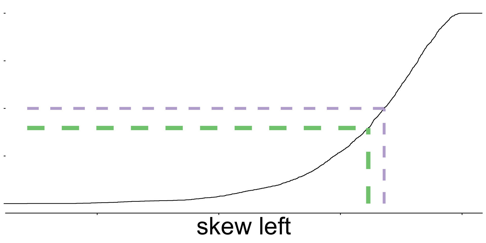

ECDF and Symmetry


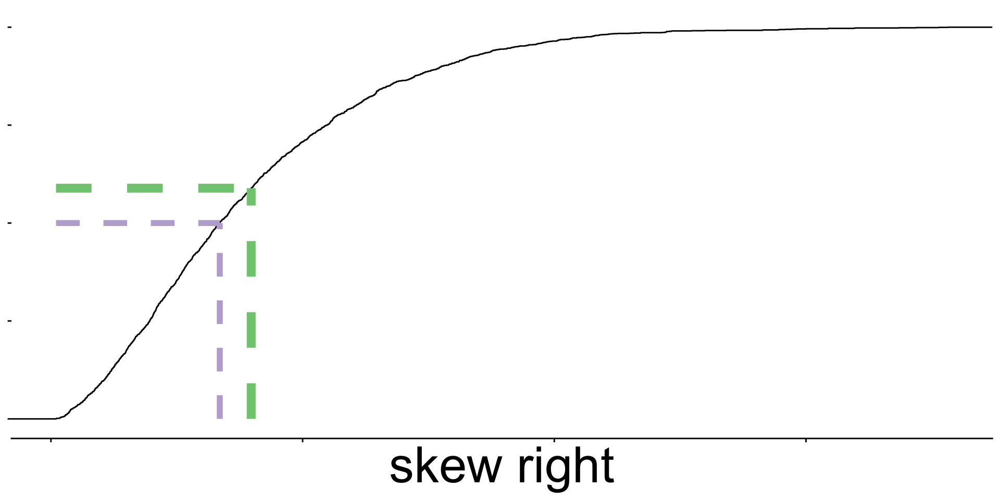
- The long tails are visible on ECDFs with skewed distributions.
Example: Lengths and depths
The team at Palmer Station collected both bill length and depth for each penguin.
| Bill depth (mm) | Bill length (mm) |
|---|---|
| 13.2 | 46.1 |
| 16.3 | 50 |
| 14.1 | 48.7 |
| 15.2 | 50 |
| 14.5 | 47.6 |
| … | … |

What scatter plots can tell us
Shape

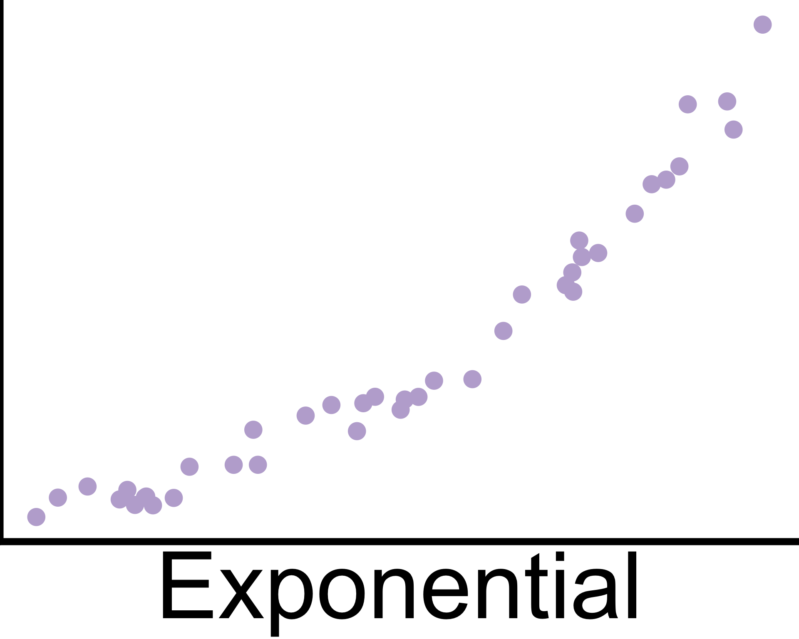

What scatter plots can tell us
Shape


Direction


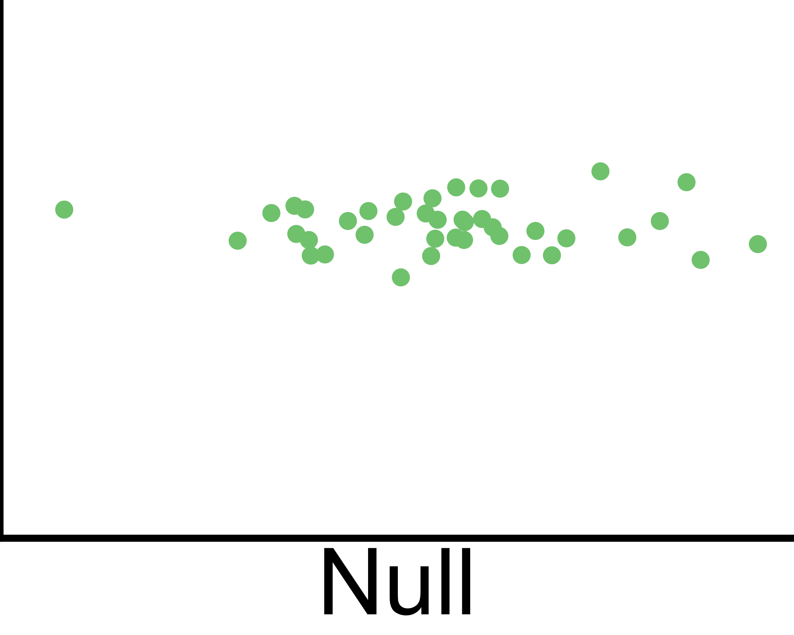
What scatter plots can tell us
Shape
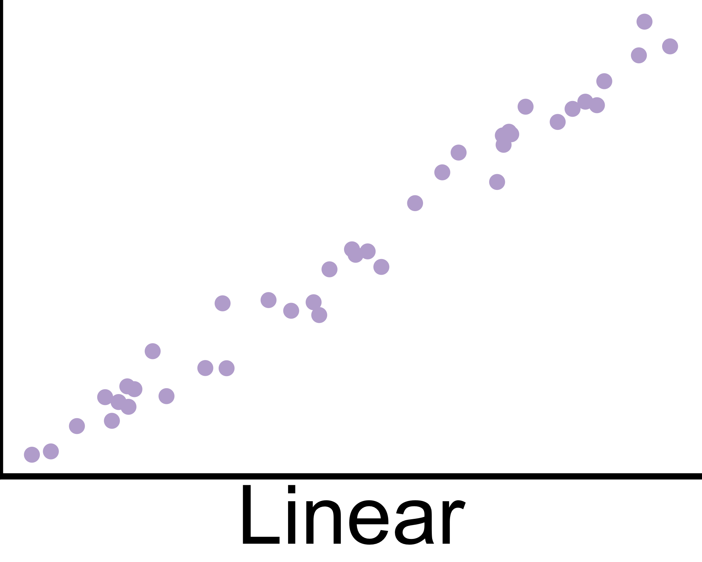

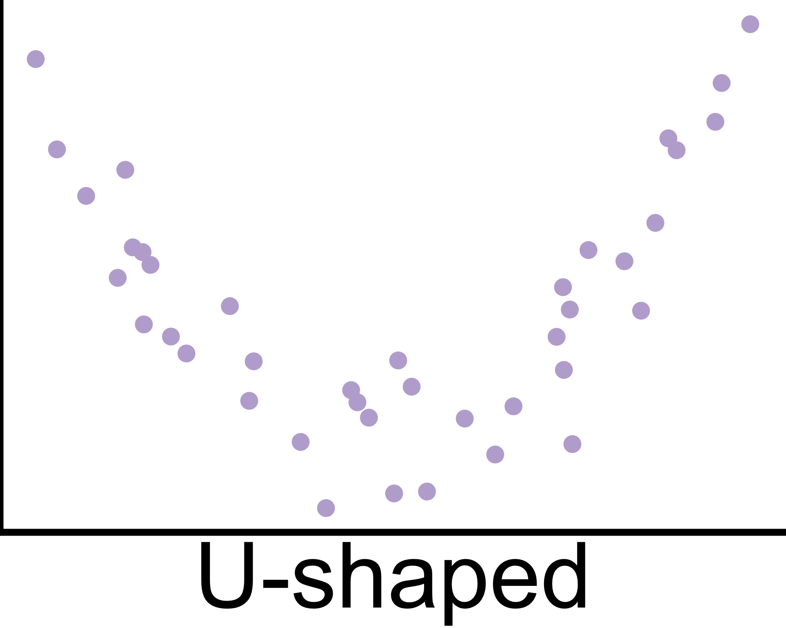
Direction
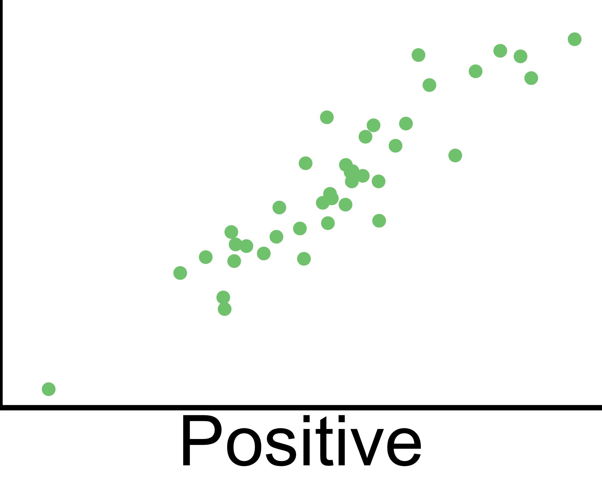
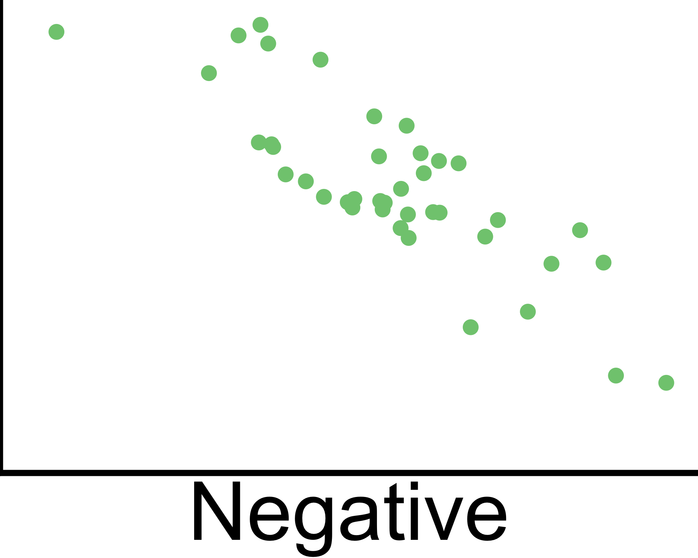

Correlation strength
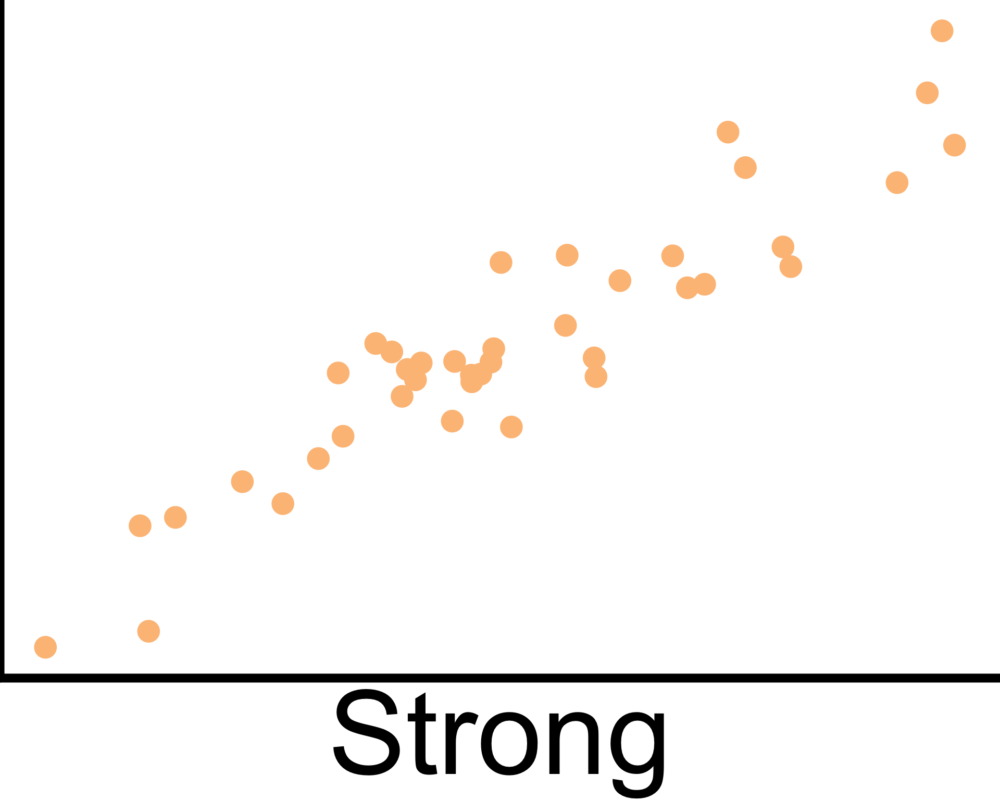
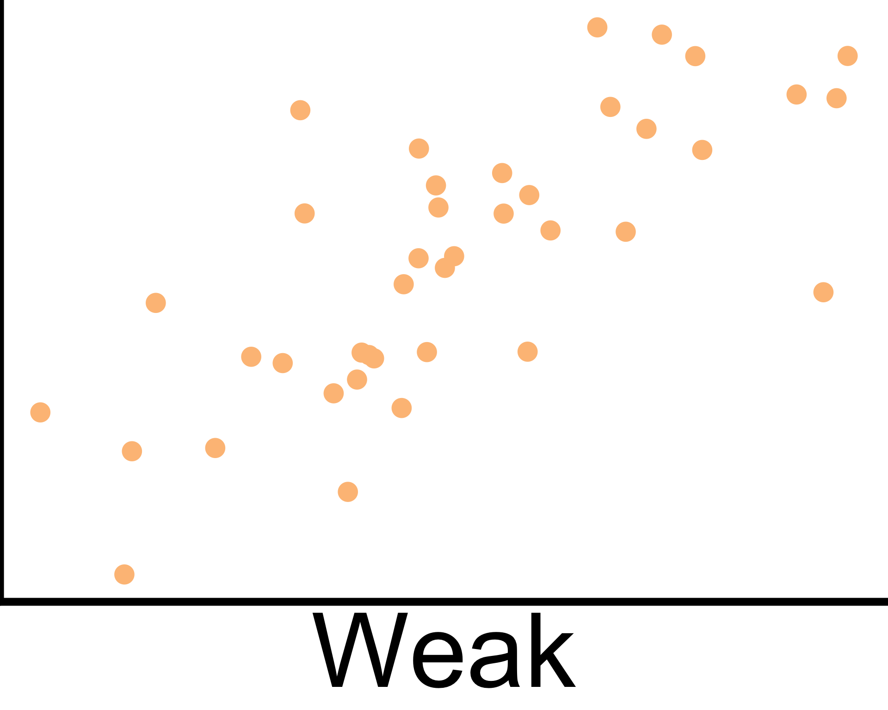
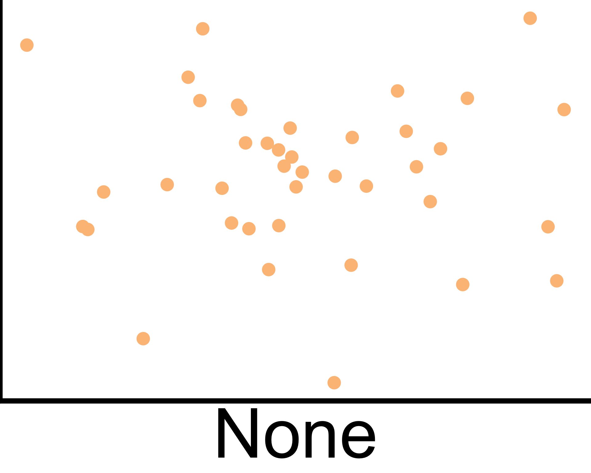
Example: Lengths and depths

How strongly are they related? How can we measure the strength of a linear relationship?
Histogram of speed of light

Histograms is an approximation of a probability density function.
Which distribution is the histogram approximating?
| \(x_1\) | \(X_1\sim F_1\) |
| \(x_2\) | \(X_2\sim F_2\) |
| \(x_3\) | \(X_3\sim F_3\) |
| \(\vdots\) | \(\vdots\) |